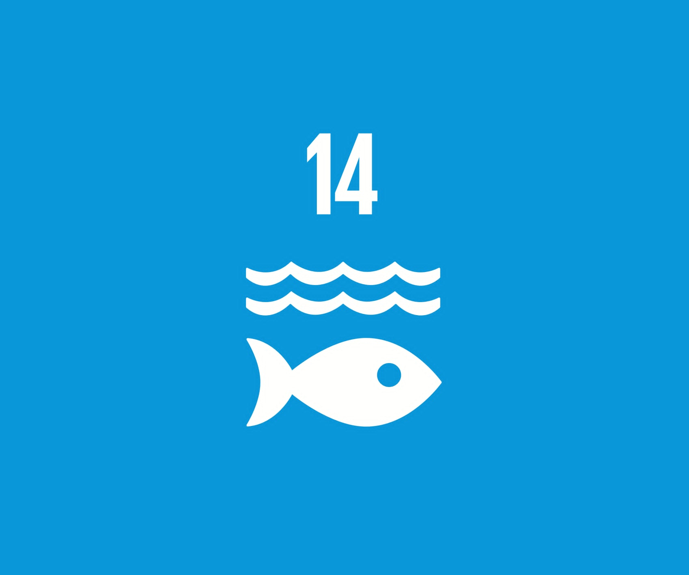

Marine Home is a website in which we tackle about our neighbors below the water. Marine Home will help the public open their eyes more about what's happening to our ecosystems and fish friends in the water. Ocean Pollution as we all know, contaminates our oceans with harmful wastes like plastic and chemicals, killing the life in the water. This does not mean that it only harms them but it also harms us and the planet's health. As part of SDGs, we focus mainly on Goal 14; Life Below Water, emphasizing the need to conserve the oceans from toxic substances. At Marine Home, we firmly believe that awareness and action can make the first step in changing the way we treat our waters on earth. We hope to finally clean the oceans of all the waste to save the life below water that is so vital to our Mother Earth.
1. Create protected areas because this can help by protecting marine animals and leave corals.
2. Fight plastic and pollution because these can harm animals and could kill them. This could also radiate the people and other animals that feed it as their prey.
3. Work with local communities and governments because this action could have a large impact for the environment.
.
.